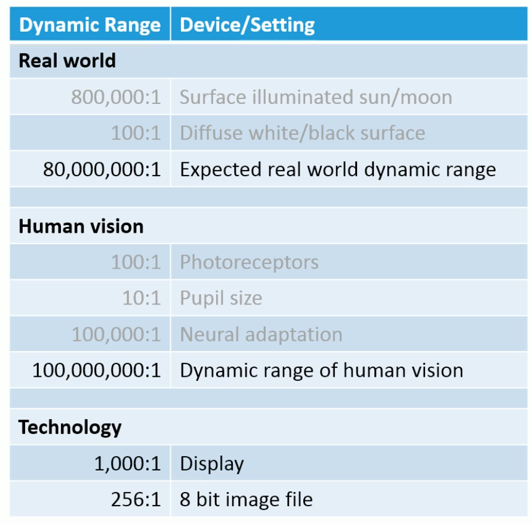
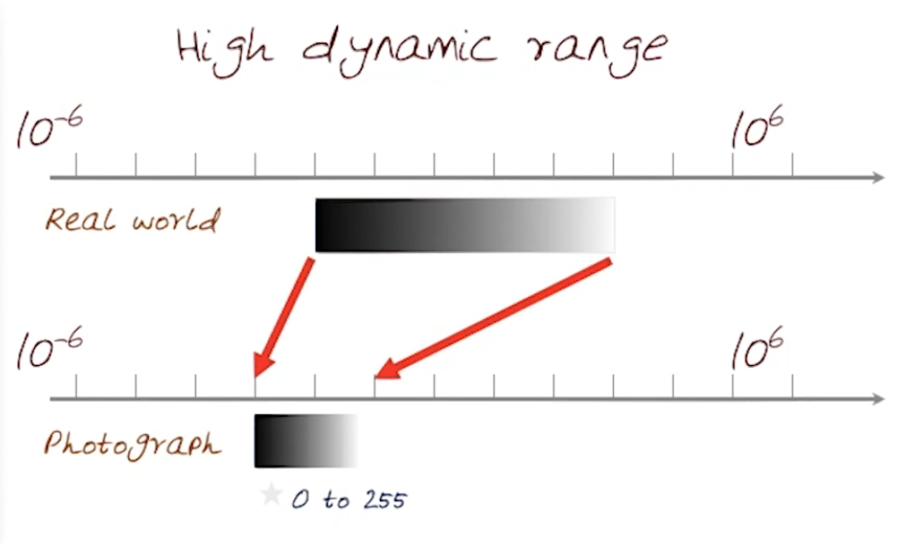
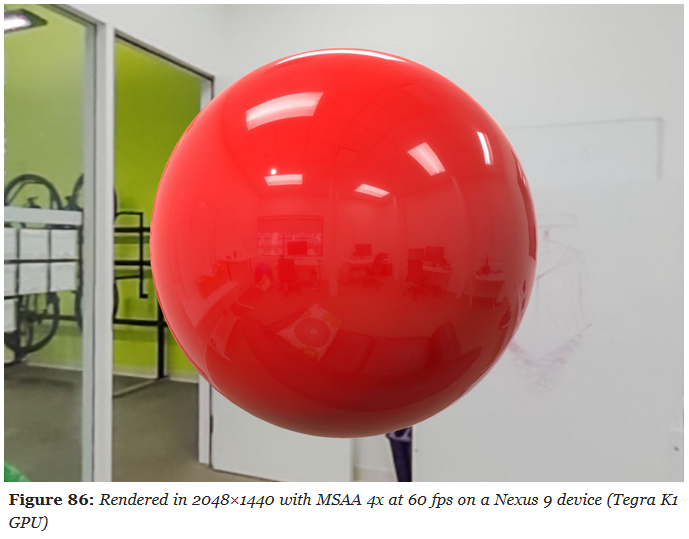
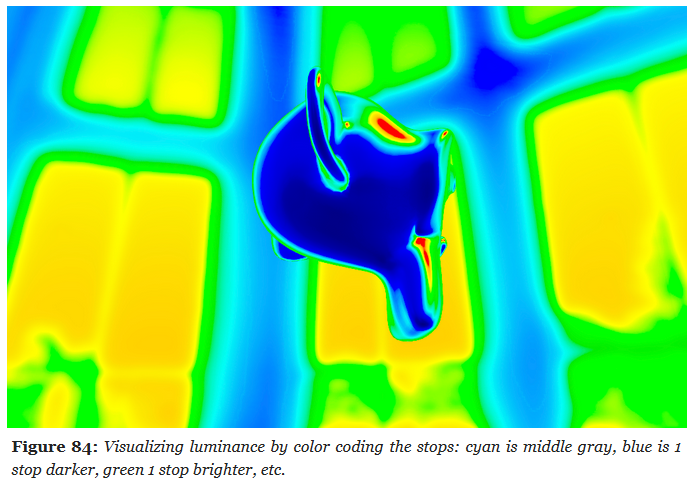
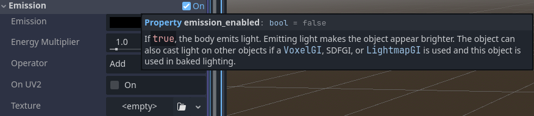

Color Spaces
Linear
vec3 srgb_to_linear_approx(vec3 srgb) {
return pow(srgb, vec3(2.2));
}
vec3 linear_to_srgb_approx(vec3 linear) {
return pow(linear, vec3(1.0 / 2.2));
}
vec3 linear_to_srgb(vec3 color) {
//if going to srgb, clamp from 0 to 1.
color = clamp(color, vec3(0.0), vec3(1.0));
const vec3 a = vec3(0.055f);
return mix((vec3(1.0f) + a) * pow(color.rgb, vec3(1.0f / 2.4f)) - a, 12.92f * color.rgb, lessThan(color.rgb, vec3(0.0031308f)));
}
vec3 srgb_to_linear(vec3 srgb) {
vec3 cutoff = step(vec3(0.04045), srgb);
vec3 low = srgb / 12.92;
vec3 high = pow((srgb + 0.055) / 1.055, vec3(2.4));
return mix(low, high, cutoff);
}
vec3 linear_to_srgb(vec3 linear) {
vec3 cutoff = step(vec3(0.0031308), linear);
vec3 low = linear * 12.92;
vec3 high = pow(linear, vec3(1.0/2.4)) * 1.055 - 0.055;
return mix(low, high, cutoff);
}
HDR, SDR, LDR
-
The word dynamic refers to the range of luminance (brightness) values that can be represented and displayed — from the darkest blacks to the brightest highlights.
-
HDR (High Dynamic Range):
-
A standard that represents a wide range of brightness and color, preserving details in both dark and bright areas.
-
Brightness :
-
Can reach 600–2000+ nits depending on the display, allowing much brighter highlights.
-
-
Color Gamut :
-
Often uses Rec.2020 or DCI-P3, covering a wider range of colors.
-
-
Formats :
-
Multiple formats exist (HDR10, HDR10+, Dolby Vision, HLG), requiring display and content compatibility.
-
-
-
SDR (Standard Dynamic Range):
-
The traditional display standard with limited brightness and color range, typically around 100 nits and Rec.709 gamut.
-
Brightness :
-
Typically limited to around 100 nits peak brightness.
-
-
Color Gamut :
-
Typically uses Rec.709 color space (sRGB).
-
-
Formats :
-
Standardized and widely compatible, but visually limited.
-
-
LDR (Low Dynamic Range):
-
A more generic term for images or rendering with restricted tonal range, often limited to 8-bit precision and prone to clipping in highlights and shadows.
-
All LDR fits inside SDR; it's an informal subset.
-
-
-
 .
-
 .
Exposure
-
In most rendering pipelines, exposure is applied as a simple scalar multiplier on the scene-linear color:
-
color_exposed = color_linear * k
-
-
where
kis some gain factor. -
Many engines define
krelative to an exposure offset in stops (like in photography). Each stop corresponds to doubling or halving the light. -
For example:
color *= exp2(ev);-
ev= exposure value in stops. -
exp2(ev)= $2^{ev}$. -
ev = +1.0→ multiply color by 2 (one stop brighter). -
ev = -1.0→ multiply color by 0.5 (one stop darker). -
ev = 0.0→ multiply by 1 (no change).
-
-
See https://google.github.io/filament/Filament.md.html#imagingpipeline/physicallybasedcamera for more information.
// Computes the camera's EV100 from exposure settings
// aperture in f-stops
// shutterSpeed in seconds
// sensitivity in ISO
float exposureSettings(float aperture, float shutterSpeed, float sensitivity) {
return log2((aperture * aperture) / shutterSpeed * 100.0 / sensitivity);
}
// Computes the exposure normalization factor from
// the camera's EV100
float exposure(float ev100) {
return 1.0 / (pow(2.0, ev100) * 1.2);
}
float ev100 = exposureSettings(aperture, shutterSpeed, sensitivity);
float exposure = exposure(ev100);
vec4 color = evaluateLighting();
color.rgb *= exposure;
-
Example :
-
Material
-
Base color: sRGB 0.81, 0, 0
-
Metallic: 0
-
Roughness: 0
-
Reflectance: 0.5
-
-
Indirect light: IBL
-
256×256 cubemap generated by cmgen from office.exr
-
Multiplier: 35,000
-
-
Direct light: directional light
-
Linear color: 1.0, 0.96, 0.95
-
Intensity: 120,000 lux
-
-
Exposure
-
Aperture: f/16
-
Shutter speed: 1/125s
-
ISO: 100
-
-
 .
-
Tone Mapping
-
Filament: Perform post-processing on the scene-referred data (linear space, before tone-mapping) as much as possible.
-
Range Compression :
-
Convert HDR luminance to LDR luminance.
-
-
Color Space Conversion :
-
Convert LDR luminance to the desired color space (RGB, XYZ, CMYK, etc).
-
-
Baked as LUT :
-
“Bakes” the transform:
-
3D LUT:
-
Encodes the full color mapping (linear → display).
-
-
1D LUTs:
-
Sometimes used for individual transfer functions (e.g., gamma, log encoding).
-
-
This is less flexible (changing exposure or dynamic response means regenerating the LUT) but can be faster or simpler.
-
This allows both dynamic range compression and color grading in one lookup.
-
Common in offline workflows (film, photography), less common in real-time engines because:
-
Needs large 3D textures for precision.
-
Harder to tweak exposure/gamma without regenerating the LUT.
-
-
-
ACES :
-
Industry-standard color pipeline used in film/VFX.
-
ACES defines a full rendering pipeline:
-
Input color space conversion (scene-linear → ACEScg).
-
Rendering transform (RRT).
-
Output transform (ODT) for the target display (sRGB, Rec.709, HDR10, etc.).
-
The ODT contains the tone mapping curve that compresses HDR highlights, so the final result isn’t “blown out.”
-
-
-
If you’re implementing “ACES without LUT” and using the standard analytical approximation (often seen in game engines, e.g. the Narkowicz ACES fit), you are applying that curve. That’s why your results look controlled.
-
Core includes a tone-mapping-like step in the RRT+ODT chain.
-
The ACES RRT+ODT math is the “recipe.” If you would bake this into a LUT, the LUT would be a “pre-baked version of the recipe” so software can apply it quickly without recalculating everything.
-
-
AgX :
-
AgX .
-
AgX without LUT
-
You’re skipping its actual rendering transform, so you’re just doing a color space conversion, not a tonemap.
-
-
AgX is normally delivered and used as a full view transform (shaper + contrast + color transforms) in OCIO configs and as pre-baked LUTs.
-
A more recent open-source rendering transform for 3D (often seen in Blender).
-
Similar idea to ACES: a defined rendering transform that compresses HDR → display space with filmic-like contrast.
-
AgX is newer and designed around filmic contrast with a wider shoulder/roll-off.
-
The official AgX distribution is often provided as LUTs (for Blender, Nuke, etc.).
-
If you apply only the matrix transforms (input → working space → output primaries) but skip the LUT (the part that encodes the log-like shaper + contrast mapping), you’re basically just viewing scene-linear → display without the tonemapping curve.
-
Result: very bright, blown-out highlights.
-
-
Luminance visualization for debug :
-
Implementation of a custom debug tone-mapping operator for luminance visualization:
vec3 Tonemap_DisplayRange(const vec3 x) { // The 5th color in the array (cyan) represents middle gray (18%) // Every stop above or below middle gray causes a color shift float v = log2(luminance(x) / 0.18); v = clamp(v + 5.0, 0.0, 15.0); int index = int(floor(v)); return mix(debugColors[index], debugColors[min(15, index + 1)], fract(v)); } const vec3 debugColors[16] = vec3[]( vec3(0.0, 0.0, 0.0), // black vec3(0.0, 0.0, 0.1647), // darkest blue vec3(0.0, 0.0, 0.3647), // darker blue vec3(0.0, 0.0, 0.6647), // dark blue vec3(0.0, 0.0, 0.9647), // blue vec3(0.0, 0.9255, 0.9255), // cyan vec3(0.0, 0.5647, 0.0), // dark green vec3(0.0, 0.7843, 0.0), // green vec3(1.0, 1.0, 0.0), // yellow vec3(0.90588, 0.75294, 0.0), // yellow-orange vec3(1.0, 0.5647, 0.0), // orange vec3(1.0, 0.0, 0.0), // bright red vec3(0.8392, 0.0, 0.0), // red vec3(1.0, 0.0, 1.0), // magenta vec3(0.6, 0.3333, 0.7882), // purple vec3(1.0, 1.0, 1.0) // white );-
 .
-
Bloom / Glow
-
-
The idea of levels is interesting, and the use of a Glow Map is very cool, giving a lens dirt look.
-
 .
-
-
Filament Engine code:
vec4 surfaceShading() {
vec4 color = evaluateLights();
// rgb = color, w = exposure compensation
vec4 emissive = getEmissive();
color.rgb += emissive.rgb * pow(2.0, ev100 + emissive.w - 3.0);
color.rgb *= exposure;
return color;
}
-
ChatGPT code, I think:
// Note: FBO is FrameBuffer Object (Color Attachment).
// Bright-pass fragment shader (extract bright areas)
#version 330 core
in vec2 vUV;
out vec4 FragColor;
uniform sampler2D sceneTex; // HDR scene texture (RGB, float)
uniform float threshold; // brightness threshold
uniform float knee; // soft knee (0..1). 0 = hard threshold
// Convert RGB luminance (sRGB or linear - be consistent with your pipeline)
float luminance(vec3 c) {
// If your sceneTex is linear, use linear luminance.
return dot(c, vec3(0.2126, 0.7152, 0.0722));
}
void main() {
vec3 color = texture(sceneTex, vUV).rgb;
float l = luminance(color);
// smooth threshold (Reinhard-style soft knee)
float t = threshold;
float k = knee * t;
float soft = clamp((l - (t - k)) / (k + 1e-6), 0.0, 1.0);
float contribution = max(l - t, 0.0) / (max(l, 1e-6)) ; // preserves color hue for very bright
// Blend soft and hard:
float mask = max(contribution, soft);
FragColor = vec4(color * mask, 1.0);
}
// Separable Gaussian blur fragment shader (use twice: horizontal then vertical)
#version 330 core
in vec2 vUV;
out vec4 FragColor;
uniform sampler2D image;
uniform vec2 texelSize; // 1.0 / textureSize (width, height)
uniform vec2 direction; // (1,0) horizontal pass, (0,1) vertical pass
// 9-tap Gaussian weights (can be adjusted). Symmetric kernel.
const float weights[9] = float[](
0.051, 0.0918, 0.12245, 0.1531, 0.1633, 0.1531, 0.12245, 0.0918, 0.051
);
void main() {
vec3 result = vec3(0.0);
// center tap
result += texture(image, vUV).rgb * weights[4];
// sample pairs
for (int i = 1; i <= 4; ++i) {
vec2 offset = direction * texelSize * float(i);
vec3 t1 = texture(image, vUV + offset).rgb;
vec3 t2 = texture(image, vUV - offset).rgb;
float w = weights[4 + i]; // symmetric indexing where center is index 4
// weights array arranged so index maps: 0..8 with center at 4
result += (t1 + t2) * w;
}
FragColor = vec4(result, 1.0);
}
// Composite fragment shader (add bloom to scene + optional tonemapping)
#version 330 core
in vec2 vUV;
out vec4 FragColor;
uniform sampler2D sceneTex; // original HDR scene (no bright-pass)
uniform sampler2D bloomTex; // blurred bright-pass
uniform float bloomIntensity; // how much bloom to add
uniform float exposure; // optional exposure for tonemapping
uniform bool applyTonemap; // whether to apply simple tonemap
vec3 acesFilm(vec3 x) {
// small ACES tone curve approximation (optional)
const float a = 2.51;
const float b = 0.03;
const float c = 2.43;
const float d = 0.59;
const float e = 0.14;
return clamp((x*(a*x+b))/(x*(c*x+d)+e), 0.0, 1.0);
}
void main() {
vec3 hdr = texture(sceneTex, vUV).rgb;
vec3 bloom = texture(bloomTex, vUV).rgb;
vec3 combined = hdr + bloom * bloomIntensity;
vec3 mapped = combined;
if (applyTonemap) {
mapped = acesFilm(combined * exposure);
} else {
// simple exposure clamp
mapped = 1.0 - exp(-combined * exposure);
}
FragColor = vec4(mapped, 1.0);
}
LUT (Look Up Table)
-
Applies a color transformation by remapping colors according to a precomputed table. Usually for grading, stylization, or fine-tuned color correction.
-
Takes already tonemapped LDR (or sometimes linear HDR) colors and remaps them for a particular “look.”
-
1D LUT :
-
Adjusts a single channel independently (e.g., gamma, exposure).
-
-
3D LUT :
-
Remaps full RGB triples (commonly used in film and games for grading).
-
-
Format :
-
.cube -
.png
-
-
Godot LUT Applying :
vec3 apply_bcs(vec3 color, vec3 bcs) {
color = mix(vec3(0.0f), color, bcs.x);
color = mix(vec3(0.5f), color, bcs.y);
color = mix(vec3(dot(vec3(1.0f), color) * 0.33333f), color, bcs.z);
return color;
}
#ifdef USE_1D_LUT
vec3 apply_color_correction(vec3 color) {
color.r = texture(source_color_correction, vec2(color.r, 0.0f)).r;
color.g = texture(source_color_correction, vec2(color.g, 0.0f)).g;
color.b = texture(source_color_correction, vec2(color.b, 0.0f)).b;
return color;
}
#else
vec3 apply_color_correction(vec3 color) {
return textureLod(source_color_correction, color, 0.0).rgb;
}
#endif
-
LUT Generation :
-
Code of
genbrdflut.vertandgenbrdflut.frag.
// Vertex Shader #version 450 layout (location = 0) out vec2 outUV; void main() { outUV = vec2((gl_VertexIndex << 1) & 2, gl_VertexIndex & 2); gl_Position = vec4(outUV * 2.0f - 1.0f, 0.0f, 1.0f); } // Frag Shader #version 450 layout (location = 0) in vec2 inUV; layout (location = 0) out vec4 outColor; layout (constant_id = 0) const uint NUM_SAMPLES = 1024u; const float PI = 3.1415926536; // Based omn http://byteblacksmith.com/improvements-to-the-canonical-one-liner-glsl-rand-for-opengl-es-2-0/ float random(vec2 co) { float a = 12.9898; float b = 78.233; float c = 43758.5453; float dt= dot(co.xy ,vec2(a,b)); float sn= mod(dt,3.14); return fract(sin(sn) * c); } vec2 hammersley2d(uint i, uint N) { // Radical inverse based on http://holger.dammertz.org/stuff/notes_HammersleyOnHemisphere.html uint bits = (i << 16u) | (i >> 16u); bits = ((bits & 0x55555555u) << 1u) | ((bits & 0xAAAAAAAAu) >> 1u); bits = ((bits & 0x33333333u) << 2u) | ((bits & 0xCCCCCCCCu) >> 2u); bits = ((bits & 0x0F0F0F0Fu) << 4u) | ((bits & 0xF0F0F0F0u) >> 4u); bits = ((bits & 0x00FF00FFu) << 8u) | ((bits & 0xFF00FF00u) >> 8u); float rdi = float(bits) * 2.3283064365386963e-10; return vec2(float(i) /float(N), rdi); } // Based on http://blog.selfshadow.com/publications/s2013-shading-course/karis/s2013_pbs_epic_slides.pdf vec3 importanceSample_GGX(vec2 Xi, float roughness, vec3 normal) { // Maps a 2D point to a hemisphere with spread based on roughness float alpha = roughness * roughness; float phi = 2.0 * PI * Xi.x + random(normal.xz) * 0.1; float cosTheta = sqrt((1.0 - Xi.y) / (1.0 + (alpha*alpha - 1.0) * Xi.y)); float sinTheta = sqrt(1.0 - cosTheta * cosTheta); vec3 H = vec3(sinTheta * cos(phi), sinTheta * sin(phi), cosTheta); // Tangent space vec3 up = abs(normal.z) < 0.999 ? vec3(0.0, 0.0, 1.0) : vec3(1.0, 0.0, 0.0); vec3 tangentX = normalize(cross(up, normal)); vec3 tangentY = normalize(cross(normal, tangentX)); // Convert to world Space return normalize(tangentX * H.x + tangentY * H.y + normal * H.z); } // Geometric Shadowing function float G_SchlicksmithGGX(float dotNL, float dotNV, float roughness) { float k = (roughness * roughness) / 2.0; float GL = dotNL / (dotNL * (1.0 - k) + k); float GV = dotNV / (dotNV * (1.0 - k) + k); return GL * GV; } vec2 BRDF(float NoV, float roughness) { // Normal always points along z-axis for the 2D lookup const vec3 N = vec3(0.0, 0.0, 1.0); vec3 V = vec3(sqrt(1.0 - NoV*NoV), 0.0, NoV); vec2 LUT = vec2(0.0); for(uint i = 0u; i < NUM_SAMPLES; i++) { vec2 Xi = hammersley2d(i, NUM_SAMPLES); vec3 H = importanceSample_GGX(Xi, roughness, N); vec3 L = 2.0 * dot(V, H) * H - V; float dotNL = max(dot(N, L), 0.0); float dotNV = max(dot(N, V), 0.0); float dotVH = max(dot(V, H), 0.0); float dotNH = max(dot(H, N), 0.0); if (dotNL > 0.0) { float G = G_SchlicksmithGGX(dotNL, dotNV, roughness); float G_Vis = (G * dotVH) / (dotNH * dotNV); float Fc = pow(1.0 - dotVH, 5.0); LUT += vec2((1.0 - Fc) * G_Vis, Fc * G_Vis); } } return LUT / float(NUM_SAMPLES); } void main() { outColor = vec4(BRDF(inUV.s, 1.0-inUV.t), 0.0, 1.0); } -
Brightness, Contrast, Saturation (BCS)
-
Brightness, Contrast, Saturation :
-
bcs.x→ brightness/contrast scaling (closer to contrast, but with black reference). -
bcs.y→ bias toward mid-gray (brightness adjustment). -
bcs.z→ saturation (grayscale ↔ color).
-
// GODOT
vec3 apply_bcs(vec3 color, vec3 bcs) {
color = mix(vec3(0.0f), color, bcs.x);
color = mix(vec3(0.5f), color, bcs.y);
color = mix(vec3(dot(vec3(1.0f), color) * 0.33333f), color, bcs.z);
return color;
}